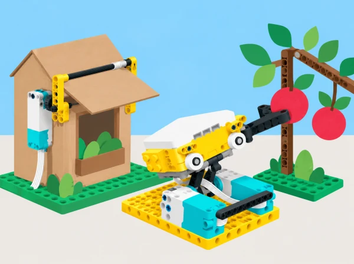

Una cooperativa escolar prepara una mostra de prototips sobre consum responsable i agricultura de proximitat. La seqüència adapta dos reptes oberts oficials de LEGO Education que combinen programació SPIKE Prime amb les peces i l’experimentació de BricQ Motion Prime. El primer investiga com automatitzar una acció quotidiana per reduir l’impacte ambiental; el segon aplica forces i disseny iteratiu a una eina de collita que no danye fruita. El context s’inspira en habitatges i horts de la Comunitat Valenciana, però els prototips només funcionen en maquetes: no controlen habitatges reals ni toquen aliments o cultius.
Dediqueu tres sessions a Smart House: Go Green i tres a Protect Our Produce; reserveu una sessió de galeria i, si cal, una d’ampliació. En tots dos reptes, establiu criteris d’èxit abans de construir, useu idees d’exemple com a inspiració i registreu proves per poder defensar les decisions amb evidències.
Activeu coneixements previs amb la pregunta «quins hàbits de casa depenen d’una decisió que podríem automatitzar?». Anoteu maneres en què una llar pot afectar el medi (per exemple, ús d’energia o d’aigua) i distingiu observacions generals d’impactes que no mesurarem al prototip. Trieu un problema acotat a partir de les idees del brief: un ventilador que s’apaga quan no hi ha ningú, una finestra que s’obri/tanque amb una condició meteorològica, o una idea conceptual que use vent per fer moure un element. La classe en selecciona una; distingiu el benefici hipotètic de l’efecte que encara cal provar. Amb tota la classe, definiu dos o tres criteris observables: l’acció només s’activa amb les entrades acordades, el mecanisme torna a una posició segura, i el model no malgasta moviment quan l’espai està buit. Esbosseu dues idees de funció i decidiu quina es prototipa. Anoteu també quina dada real no es pot inferir d’una maqueta: consum elèctric, emissions o estalvi de la llar.
Construïu un ventilador de cartó mogut per un motor SPIKE o una finestra/persiana lleugera, fixant el panell al bastidor amb una frontissa o un eix que permeta obrir i tancar sense soltar-se. Useu el sensor de distància per representar presència i el sensor de color per llegir una targeta de condició (per exemple, «calor simulada» o «temperatura suau»); el sensor de color detecta la targeta, no mesura la temperatura de l’aula. Programeu una condició composta perquè el ventilador només s’active quan hi haja presència i la targeta represente calor; decidiu què passa en els altres casos. Feu una matriu de quatre combinacions d’entrada i prediu l’eixida abans de cada prova. Si el sensor de color o la versió de l’app no admeten la combinació prevista, representeu la segona condició amb un comandament manual i etiqueteu-ho com a simulació. Com a ampliació, afegiu una tercera condició de temps o una targeta que represente l’oratge exterior i compareu la matriu ampliada. Reviseu un cas que falle i canvieu una sola cosa del programa, la subjecció del panell o el mecanisme.
Repetiu la matriu d’entrades amb la versió revisada i compteu quantes eixides coincideixen amb la predicció. Argumenteu com la solució podria reduir una acció innecessària i quin impacte no heu mesurat. Creeu un anunci breu per a una família fictícia: descriviu el funcionament, el possible benefici quotidià i ambiental com a hipòtesi, els criteris complits i una limitació. Cap anunci pot afirmar estalvis d’energia o aigua que el grup no haja mesurat. Un altre equip fa preguntes com «què passa si canvia l’entrada?» o «quina dada us falta per afirmar que estalvia energia?». Incorporeu el retorn a la fitxa del disseny. La proposta segueix el procés d’ideació, construcció, programació, modificació i comunicació del brief; no feu afirmacions d’estalvi real.
Presenteu el repte: recollir una “fruita” d’una branca de maqueta sense danyar-la. Observeu que, en cada contacte, l’eina exerceix una força sobre el fruit i el fruit una força igual i oposada sobre l’eina: són forces en cossos diferents i, per tant, no es cancel·len entre si. Representeu parells d’interacció segons la tercera llei de Newton. Cada parella defineix «dany» per a la prova (deformació visible, caiguda o impossibilitat de traslladar el fruit) i fixa condicions comunes: mateixa alçada, massa aproximada, distància i zona de recepció. Dibuixeu dues ferramentes que reduïsquen forces perjudicials: una pinça amb element flexible, un bressol o ganxo. Considereu també, si la dotació BricQ ho permet, un accionament pneumàtic o un ressort com en les idees del brief. Compareu-les sense construir encara i expliqueu quina part acumula, reparteix o limita el contacte.
Construïu l’agafador i fixeu-lo al motor SPIKE amb eixos i connectors estables; dibuixeu la connexió i comproveu que no es desprén durant el moviment. Si disposeu del set BricQ Motion Prime, compareu les solucions amb elements flexibles, ressorts o pneumàtics que realment incloga el kit. Sense BricQ, feu una articulació de cartó ondulat, una cinta de paper o una superfície d’escuma sobre una estructura SPIKE estable; anoteu que és una alternativa material parcial, no equivalent als elements BricQ. Programeu el motor amb dues ordres fàcils de distingir (per exemple, botó A obri i botó B tanca) i moviments lents i repetibles; comproveu què fa cada botó i afegiu una manera accessible d’aturar/reiniciar. Proveu amb una bola de paper arrugada o una peça d’escuma, mai fruita real. Anoteu què passa en cada contacte.
Proveu almenys dos dissenys amb peces simulades de dues formes i mides diferents i feu tres intents per cada combinació. Registreu si s’ha pogut agafar i retenir la peça, si ha caigut o s’ha deformat, i quant ha tardat el trasllat. Per millorar el programa, assigneu recorreguts o velocitats de tancament diferents a les peces menudes i grans amb selecció manual o etiquetes que el sensor puga llegir; no afirmeu que un sensor de color o distància mesura la duresa del fruit. Modifiqueu una sola variable mecànica o de codi (amplària, punt de pivot, material flexible, velocitat o recorregut del motor) i repetiu els casos amb les mateixes condicions. Analitzeu si el disseny funciona per a més d’una forma; no trieu només pel rècord d’un intent. Relacioneu el contacte i la força de reacció amb el criteri de dany, tot distingint observació qualitativa de mesura de força, que el prototip no està fent si no incorpora un sensor adequat.
Exposeu els dos prototips, el programa o esquema manual, la matriu de proves i la decisió final. Els visitants proven el mecanisme amb una fitxa de paper i responen: què fa?, quina decisió de disseny és més convincent?, quina prova falta? Els equips fan un argument basat en criteris i dades, s’autoavaluen i deixen escrit què farien amb més temps. Qui acaba abans pot comparar una segona condició per al ventilador (un temporitzador o un segon estat representat per una targeta) o redissenyar la pinça per a un altre fruit simulat. No es diu que el prototip estiga preparat per a una casa o una collita real.
SPIKE Prime amb hub, motor gran o mitjà, sensor de distància i sensor de color per a la maqueta de casa; BricQ Motion Prime si el centre vol provar-ne els elements mecànics; cartó, cinta de paper, llapis, targetes de colors mates, regla i materials lleugers per a simular fruits (paper arrugat, boles d’escuma o peces grans). El set SPIKE Prime no inclou un sensor de temperatura ambiental: les condicions de clima es representen amb targetes. La situació es pot completar sense BricQ amb cartó i components SPIKE, però aquesta alternativa no reprodueix els materials ni totes les possibilitats físiques del kit BricQ.
Carpeta de procés amb criteris i prediccions, esbossos alternatius, codi condicional, matriu de quatre entrades, taula d’iteracions de collita, retorn dels visitants i argument final. Valoreu la coherència entre problema, criteris, programa i proves; que la modificació responga a dades; i que l’equip separe allò observat d’allò que només suposa. No connecteu cap prototip a la xarxa elèctrica, no inferiu estalvi energètic d’una maqueta, no useu fruita ni branques reals i manteniu qualsevol moviment a baixa velocitat. Atureu el hub abans d’ajustar peces.
La proposta adapta els dos reptes de LEGO Education Prime Combined: Smart House: Go Green i Protect Our Produce. S’han contrastat els objectius, fases de disseny, idees d’exemple, condicions compostes, tercera llei de Newton, proves iteratives i reflexió del pla docent i els briefs públics. L’original declara SPIKE Prime, BricQ Motion Prime, dispositiu amb l’app SPIKE i un brief per grup; per això les alternatives de cartó ací identificades són adaptacions parcials de material i no equivalències. El context, les activitats, les explicacions, les dades, les imatges i els instruments d’avaluació són propis.